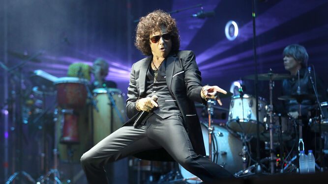

Enrique Ortiz de Landázuri Izarduy (Zaragoza, España, 11 de agosto de 1967),1 más conocido como Enrique Bunbury, es un cantante, compositor y músico español. Es reconocido por ser el vocalista de la banda de rock Héroes del Silencio.
Comenzó su actividad musical durante los primeros años de la década de los 80 formando parte de Apocalipsis, Rebel Waltz, Proceso Entrópico y Zumo de Vidrio, aunque su consagración llegó siendo el vocalista y líder de la banda Héroes del Silencio, grupo musical de gran éxito y considerado por muchos una de las mejores bandas de rock en español.23 Después de la ruptura del grupo en 1996, comenzó su carrera como solista al año siguiente consolidándose como una importante figura en el ámbito musical español e hispanoamericano.
La trayectoria solista del cantante a diferencia de Héroes del Silencio ha sido muy diferente en cuanto al sonido musical, manteniendo la esencia del rock, llegando a experimentar varios ritmos desde música electrónica y música árabe en los primeros tiempos, pasando por música de cabaret, rancheras, blues, flamenco y tangos,4 hasta salsa, milongas, boleros y cumbias en uno de sus últimos trabajos donde homenajea a América Latina.
-
Discografía en solitario
- Radical sonora (1997)
- Pequeño (1999)
- Pequeño cabaret ambulante (2000)
- Flamingos (2002)
-
Discografía con Héroes del Silencio
- El mar no cesa (1988)
- Senderos de traición (1990)
- El espíritu del vino (1993)
- Avalancha (1995)
- Parasiempre (1996)
- Rarezas (1998)
- Canciones ?84-?96 (2000)
En la lista de "Los 250 mejores álbumes de rock iberoamericano" de la revista estadounidense Al Borde se sitúan en el puesto 81º su álbum Flamingos, en el 154º Pequeño y en el lugar 228º Radical sonora, además de sus cuatro álbumes de estudio con Héroes del Silencio: Senderos de traición (n.º 5), Avalancha (n.º 35), El espíritu del vino (n.º 117) y El mar no cesa (n.º 119).
Enrique Bunbury también ha aparecido en la lista del número 119 de la revista Rolling Stone publicada en septiembre de 2009, como el único cantante con dos álbumes entre los diez primeros discos más influyentes de los últimos 50 años en España.
Los dos discos destacados fueron Senderos de traición (1990) en la segunda posición y Flamingos (2002) en novena posición. En 2004 fue considerado como uno de los españoles más influyentes por el periódico El Mundo.8 El apellido artístico Bunbury proviene de un personaje de La importancia de llamarse Ernesto, de Oscar Wilde, como él mismo ha confirmado en diversas entrevistas y en su biografía Lo demás es silencio, escrita por Pep Blay.
Bunbury ha colaborado en varios documentales, entre ellos destaca 72 horas... Y Valencia fue la ciudad, que narra cómo un fenómeno que situó a la ciudad de Valencia en la vanguardia social y musical de estas décadas, degeneró en la ruta del bakalao. El filme del realizador Oscar Montón, y del productor Juan Carlos García, recoge imágenes inéditas grabadas en estas discotecas para "realizar un homenaje a la noche valenciana" y acabar con el tópico de "marginalidad que se le ha adjudicado". Asimismo ha explicado en varios trabajos su pasado con Héroes del Silencio y la relación con los integrantes de la banda. En 2020, la publicación del libro El método Bunbury, de Fernando del Val, arroja que el autor ha copiado versos de otros autores en sus letras sin mencionarlos adecuadamente, provocando una polémica alrededor del cantante
HEROES DEL SILENCIO
Enrique Bunbury nació en Zaragoza, capital de Aragón, en una familia burguesa, hermano de Rafael, Jorge y Ana.11 Desde pequeño tuvo gusto por la música, armando una batería casera con lo que tenía a mano. A los 8 años vio en la televisión la película El barrio contra mí (King Creole) donde aparecía Elvis Presley, y desde ahí quedó impactado por el "Rey", convirtiéndose en uno de sus ídolos hasta la actualidad.11 Gracias a su tío y su hermano Rafa, Enrique tuvo la fortuna de escuchar los artistas más reconocidos.
Era un niño normal con buena conducta en la escuela y excelentes notas, pero a partir de la adolescencia, la vida de Enrique tomó un giro, teniendo actitudes rebeldes, casi vandálicas hacia los demás, lo apodaban "contra" porque siempre estaba en desacuerdo con todos, con una actitud rebelde.12 Tuvo que enfrentarse a una falsa acusación de tráfico de drogas por parte de un cura de su colegio. Después de eso, lo expulsaron de varias instituciones durante dos años seguidos.13 Después de esa época, trabajó como DJ en un lugar llamado "El bandido". Logró comprarse su primer disco, que fue The Dark Side of the Moon de Pink Floyd.
El artista desarrolló sus primeros años entre libros: leía a Friedrich Nietzsche con su teoría del Superhombre y Franz Kafka (Carta al padre); también otros como Rafael Alberti y Antonio Buero Vallejo por sus simbolismos. William Blake, Charles Baudelaire, Arthur Rimbaud, Julio Verne, Charles Dickens, Emilio Salgari y Rudyard Kipling eran también de sus autores más leídos.
 Enrique Bunbury en concierto en 2012Su andadura musical formalmente comenzó a los trece años, cuando se compró su primera guitarra eléctrica con ocho mil pesetas que había ahorrado, empezó a ejecutarla en 1980 en un grupo de colegio llamado Apocalipsis. Entre 1981 y 1983 ejecutó la batería, fue cantante de una banda llamada Rebel Waltz, y tocó el bajo en Proceso Entrópico, nombre que se les ocurrió viendo un viernes la aparición de un fakir comiendo cristales en el programa "Un, dos, tres" de Chicho Ibáñez Serrador.
Tras dejar Proceso Entrópico, Bunbury pasó a ser el vocalista de un grupo llamado Zumo de Vidrio que se convirtió en la semilla de Héroes del Silencio. En esa formación estaban Enrique y Juan Valdivia que junto a Pedro Andreu, acabaron formando Héroes del Silencio (1984).